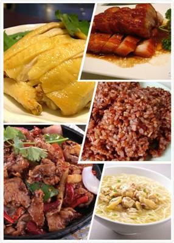
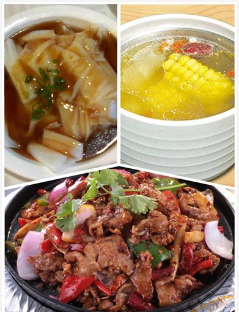
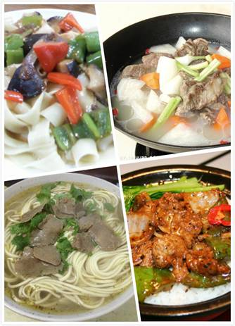
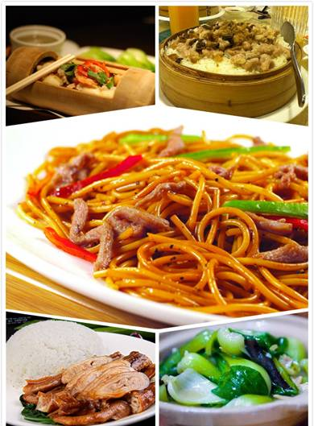
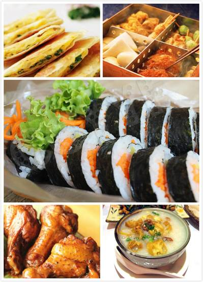
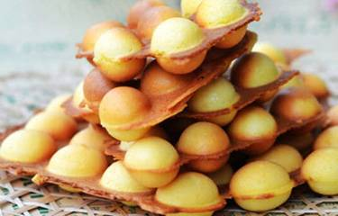
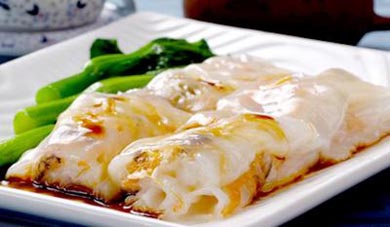

- 军训攻略
- 大学First Day
- 抵玩华师
- 学の华师
- 食の华师
- 住の华师
- 行の华师
- 华师の景
- Ucity简介
- Ucity2014年成就
狂奔饭堂的身影、辘辘饥肠的感觉、狼吞虎咽的食相，这一切都还萦绕在心头，一切都恍如昨天，痛并快乐着的高中生活都值得细细回忆品味，倘若非要说有些高中的过往是不堪回首的那么想必就要数饭堂里的饭菜和吝啬的饭堂阿姨了吧。那么，欢迎各位新鲜的师弟师妹到素有“华南吃饭大学”之美称的华南师范大学的碗里来。传说中华南吃饭大学大学城校区校内有三大食肆，分别为：位于生活南区的楠园、处于生活北区的翰园以及屹立于南北区和教学区的“小贝岗”。
- 楠园
楠园共有四层，第一层主要为各种面食，第二层为大众菜，第三层主要是用作学生活动，第四层为特色美食，另外，楠园服务站还有烧烤，其中数四楼最受欢迎。餐票销售处位于一楼饭堂与楠园服务部的交界处。
人均消费：8元

一楼美食：快餐类饭菜、特色美食（U仔os：相传去得早会有，但是U仔一年来仍未尝过……）、煲仔饭、铁板烧、汤粉、粥、拉面、各种特色捞面、铁板炒粉、陈村粉、玉米饺、经济套餐、广东老火靓汤等
二楼美食：主要为大众菜式，还有凉粉、西瓜、糖水、汤水等
四楼美食：特色菜式、汤饭、汤面、粗粮套餐（一菜一肉一饭一汤）、汤水等

★U仔推荐
- 铁板烧：一走进饭堂的第二个窗口就是铁板烧，香气飘满了一楼整层，一嗅即饿，有铁板鱿鱼、铁板鸡块、铁板田鸡……
价格：9—11元不等
推荐指数：★★★★☆
- 陈村粉：陈村粉蒸得恰到好处，较为清淡，吃起来不会腻，但是……U仔觉得一般只吃一份不饱哦
- 价格：6元
推荐指数：★★★☆☆
- 经济套餐：位于楠园一楼最右边的窗口，一菜一蛋一肉一饭，经济实惠，重点是，那个蛋真的挺好吃的（有葱，但味道不大，U仔不喜欢吃葱也能吃）
价格：7元
推荐指数：★★★★☆
- 粗粮套餐：有红米、黑米等粗粮作为主食，有青菜，有肉，肉主要推荐肥叉烧（其实不肥）和烧鹅，重点是有汤，经济实惠，但是吃不惯粗粮的人慎选，因为粗粮可能会有点腻，但粗粮有益哦
价格：8元
推荐指数：★★★★★
- 广东老火靓汤：虽然是大桶汤，但相比于外面食肆的，华师饭堂的汤料放得还是挺足的，火候也较为适中，淡而不腻，而且多喝汤水对身体好哦
价格：1元（小碗），2元（大碗）
推荐指数：★★★★★
- 翰园
翰园位于华师生活北区，较楠园更靠近教学区，一般住在南区的人也会来翰园吃饭。翰园共三层，一楼为大众快餐类，二楼也为大众菜，三楼为各种特色菜，其中数三楼最受好评。
人均消费：8元
一楼美食：普通快餐类，但由于不怎么需要排队，所以人流量也不小，翰园正门处有“小灶”，主要是单点的面食
二楼美食：大众菜式为主，也有汤水和糖水，但不同于一楼，二楼的菜以小碟盛着，味道也较一楼的好；打卡处有饮料
三楼美食：特色餐，手抓饼、粥、饺子、锅仔菜、锅仔粉、卤肉套餐、汤面、粿条、快餐类菜式、西餐（意粉、通心粉加扒）、咖喱炒饭、蛋炒饭、糖水（红豆沙、绿豆沙等）、汤水，最右侧为餐票销售处和饮料销售处，最左侧有一清真饭堂，主要有拉面、盖浇面、盖浇饭、捞面、竹筒饭、蒸笼饭等

★U仔推荐
1. 锅仔粉：清淡而不腻，食欲不佳时的最佳选择，但食量较大的U仔认为量有点小，但是这料还是挺足的（U仔温馨提示：小心被烫哦）
价格：8元
推荐指数：★★★☆☆
- 清真盖浇面：面条爽滑筋道，料也足，口味略重
价格：7或8元
推荐指数：★★★★☆
- 烧卤套餐：一菜两肉一饭（饭量一般为二两，男生可加饭），是翰园三楼最受欢迎的菜式之一
价格：8元
推荐指数：★★★★☆
- 意粉：属西餐窗口，可搭配一酱（黑椒、咖喱、番茄酱）和一块扒肉，排队人数较多
价格：7元
推荐指数：★★★★☆

★饭堂攻略：一般来说，楠园的饭菜较翰园的便宜，种类也多；一般来说，饭堂中午比下午多人；饭堂有夜宵，7点半后开始，但夜宵的大众选择为小贝岗
- 小贝岗
大学城内有条村名为“贝岗”，饭店时有各类美食，有店铺形式的，也有小摊形式的，而在华师内部的“交通枢纽” 处，总是有一大群小摊在饭店时聚集营业，被华师人称为“小贝岗”，在南北区的连接的通道上也有小分支。
小贝岗可以说是网罗了国内外的著名美食：山东煎饼、化州糖水、化州特色粥、西安肉夹馍、湖北土家酱香饼、潮汕牛肉丸粿条、西关艇仔粥、香港奶茶、香港虾子面、韩国紫菜包饭、印度飞饼、新奥尔良鸡腿、章鱼小丸子、水果、果汁等。
人均消费：10元

★U仔推荐
1. 土家酱香饼：饼香香脆脆的，料足美味，经济实惠
价格：可选择
推荐指数：★★★☆☆
- 化州糖水：种类繁多，糖水甜而不腻，价格实惠
价格：3到5元不等
推荐指数：★★★★☆
3. 西关艇仔粥：艇仔粥是广州的特色美食，老板是个良心商家，料多，而且可以满足顾客的各种喜好
价格：5元
推荐指数：★★★★☆
- 果汁：果汁可以说是全小贝岗最为干净有益的一种食物了，U仔推荐开货车的大叔经营的水果摊，大叔绝对是良心商家，因为U仔是常客，所以大叔总是买一送一什么的（请尽情YY U仔满足的表情）
价格：5元
推荐指数：★★★★☆
★U仔温馨提示：小贝岗多为路边的小摊，食品清洁度不高，还是尽量少吃为好哦
- 华师以外的香气（贝岗、广大商业中心、南亭、北亭）
除各高校饭堂以外，大学城还有四大食肆，排名不分先后，分别是：贝岗、广大商业中心、南亭和北亭，鉴于各个食肆的美食都大同小异，U仔便只就四大食肆作简单介绍，再则就推荐几款比较有特色的美食。
贝岗是华师人在大学城内最常光顾的食肆，主要原因是因为距离近，著名的贝岗连接着中大的商业中心——GO GO 新天地，还有准点的专车接送，吃喝玩乐一应俱全，整个贝岗望去都是吃的，似乎还能看到食物的香气氤氲在上空。
北亭是华师人聚众宵夜的好地方，一般是大排档、饭店之类的，一到晚上就灯火通明，十分热闹。
广大商业区虽然距离华师较远，但也是华师人常常留恋之地，具体“食物设备”跟贝岗相似。
南亭有一条美食街，各地美食也是挺齐全的，但由于距离远，华师人一般很少去。
★U仔推荐
- 广大鸡蛋仔：广大的鸡蛋仔软脆程度可自选，味道也可自选，有原味、可可味、抹茶味、香芋味等，但是无论是哪种口味，鸡蛋仔的蛋味都很浓~
价格：5—8元
推荐指数：★★★★☆

- 宝记拉肠：宝记位于贝岗村内部，是广州的老字号，宝记的拉肠更是远近驰名，肠粉厚度适中，外表通透，看上去就让人食欲大增，吃起来有种淡淡的鲜甜味
价格：7—10元
推荐指数：★★★★☆

- 重庆鸡公煲：由于U仔不是重庆人，也不知这大学城的重庆鸡公煲做得是地道与否，但是U仔每每路过都会被它的香气所折服，忍不住走进里面吃上一顿，冬天拉上小伙伴去吃就最好了，保暖又管饱（在四大食肆都有哦）
价格：60元左右（二人份，准饱）
推荐指数：★★★★☆
部分图片转自网络

Ucity简介
Ucity校园传媒是华南师范大学学生工作处指导下的实践、创新、培训基地。Ucity校园传媒致力于为广大学子提供各类校园资讯、计算机维修服务及大型校园活动策划实施等······